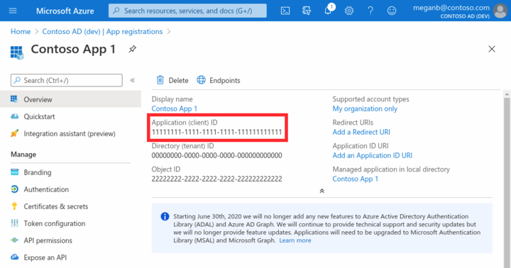
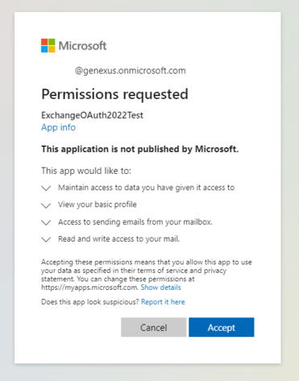

In this article, you will find the necessary steps to provide data to connect to the mailbox through Microsoft Exchange OAuth 2.0.
Example: Application administrators have to provide the necessary data to the programmers (at their request) so that they can connect to their mailbox.
You need to follow these 3 steps to provide data through Microsoft Exchange OAuth:
A) Follow this tutorial from Microsoft: Register an application with the Microsoft identity platform. Execute all steps of the "Register an application" section (8 steps in total).
B) Now you have to configure the platform settings. To do so, follow these steps: Configure platforms settings (4 steps in total).
C) In step 4, select "Mobile and desktop Applications" as Platform and continue.
D) A new window called Configure Desktop + devices is opened.
Select the Redirect URI: https://login.microsoftonline.com/common/oauth2/nativeclient and confirm.
After registering the application, you can start the code authorization request process.
A) Get the Application (client) ID of the newly created Application:

You can find it by clicking on the overview window, below "Display Name."
B) Open a browser and execute the following URL. The "Client_id" data must be replaced by that of the newly created Application:
https://login.microsoftonline.com/organizations/oauth2/v2.0/authorize? client_id=xxxxxxxx-xxxx-xxxx-xxxx-xxxxxxxxxxxx &response_type=code &redirect_uri=https%3A%2F%2Flogin.microsoftonline.com%2Fcommon%2Foauth2%2Fnativeclient &response_mode=form_post &scope=offline_access%20https%3A%2F%2Foutlook.office.com%2FSMTP.Send%20https%3A%2F%2Foutlook.office.com%2FPOP.AccessAsUser.All &state=12345
C) Log in with your Microsoft account and accept the following permissions:

D) After accepting, the browser will be redirected to the Redirect URI (https://login.microsoftonline.com/common/oauth2/nativeclient). You will see a blank screen.
E) After you are redirected to that blank screen, open the browser DeveloperTools (F12 in Chrome).
F) Go to Network Tab and refresh the page.
G) Once in the Network Tab, select the Request and copy the "code" of the Request.
Read more about this topic in this article: OAuth Module.
Google OAuth 2.0 process for Mails